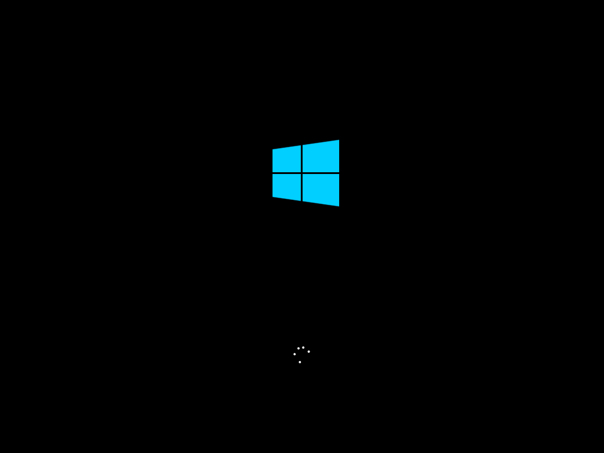

Start · Reserve path · GWX tray · About · Edge

2015 product: free upgrade for eligible Windows 7/8.1 PCs · Start menu returns · Continuum lore. Museum shell may still show residual Win7 for honesty.
Writes itt15-win10 · incomplete boxes block save